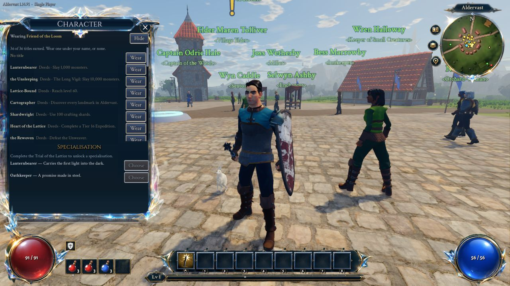
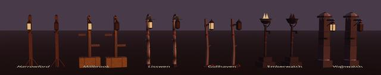
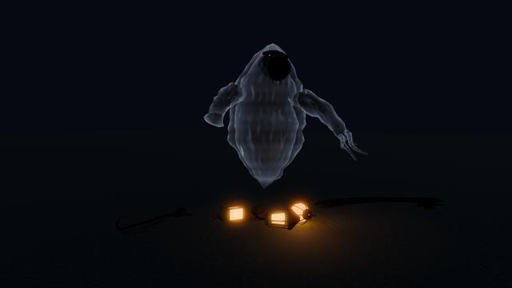

Lanternbearer
DeedsSlay 1,000 monsters.
- Earned by
- The deed Lanternbearer
The titles worn under a hero's name, and how each is earned.
Titles are earned by what you do (1.14.91): deeds, the end of the story, battle honour, each raid's last boss and Lanternfast. Wear one under your name by picking it from the Titles row of the character sheet, and everyone sees it on your nameplate; the list also shows how to earn the ones you do not have yet. Titles you had earned before 1.14.91 were given all at once the next time you came into the world, and you choose whether to wear one.

Slay 1,000 monsters.
The Long Vigil: Slay 10,000 monsters.
Reach level 60.
Discover every landmark in Aldervast.
Use 100 crafting shards.
Complete a Tier 16 Expedition.
Defeat the Unweaver.
Help slay Calathrax.
Complete 25 trades with other players.
Close 50 Lattice Rifts.
Reach Exalted with the Lantern Compact.
Reach level 40 without dying.
Win the Saltreach Derby at Gullhaven.
Finish an Hourglass run of tier 10 or higher in time.
Lay Them Down: Slay all four of the Waking's world bosses in one week.
The Long Snow Lifts: Help slay Rimeback, the Bear of the Long Snow, in the White Hollow.
See ten Warp Tears through until they close.
Unpicked: Unpick a hundred of a Warp Tear's creatures before it closes.
Spring and Neap: See ten tides in and out.
Open fifty sea chests before the tide takes them back.
Cut fifty knots.
The Last Vigil: Keep all twelve of Wenna's vigils, the last under the Lattice Gate while she unpicks the Tailor's basting.
Win ten battles on the battlegrounds.
Beat every inn's regular at Cinders.
Have thirty bounties paid in one week.
Unfinished: Come to the end of the story, from the Unlit Road to the Warp Pillars, and see the Lattice as it is: alive.
Earn 1,000 battle honour in all.
Earn 4,000 battle honour in all.
Earn 10,000 battle honour in all.
Earn 25,000 battle honour in all.
Earn 60,000 battle honour in all.
The Crown Sundered: Bring down the Sundered King in the Spire of the Sundered Crown.
Out of the Deep: Bring down Morrowmaw, the Abyssal Angler, in the Drowned Basilica.
The Star Let Go: Bring down the Caught Star in the Cinderwell.
The First Thread: Bring down Mother Halse, the First Weaver, in the Fell.
Bring down the last of all four raids.
Finish 21 of Lanternfast's tasks.
Lamplighter of the Long Night: Light or tend 25 boundary lanterns at Lanternfast.
Every Light Comes Back: Help bring down the Hush, Heart of the Long Night, in the Gloaming at Lanternfast.
Every Hearth Alight: Light a boundary lantern in each of the six towns in one Lanternfast.

Nothing Left to Eat: Help drive off the Lamp-Eater at Lanternfast.
